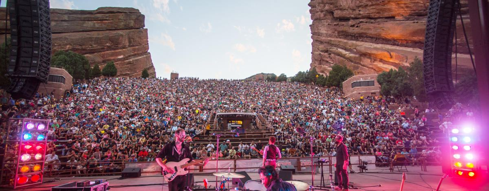

This Week / Event details
Bright Nights at Four Mile (through Nov 8)

- Date and time
- Nov 01, 2026 — Nov 09, 2026
- Venue
- Four Mile Historic Park, Denver, CO
Dates are shown as supplied by the calendar source. For date-only listings, confirm opening or performance times with the venue.
Lantern festival at Four Mile Historic Park with a new theme and sculptures each year. Runs into early November; exact November dates, times and prices not captured.
Source: https://visitdenver.com/blog/post/event-planning-guide/
Calendar updated 2026-11-04T17:00:40.013776+00:00. Details may change.